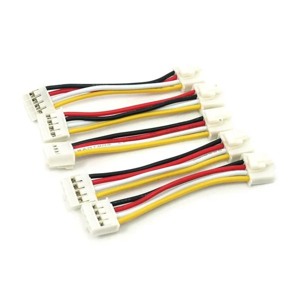
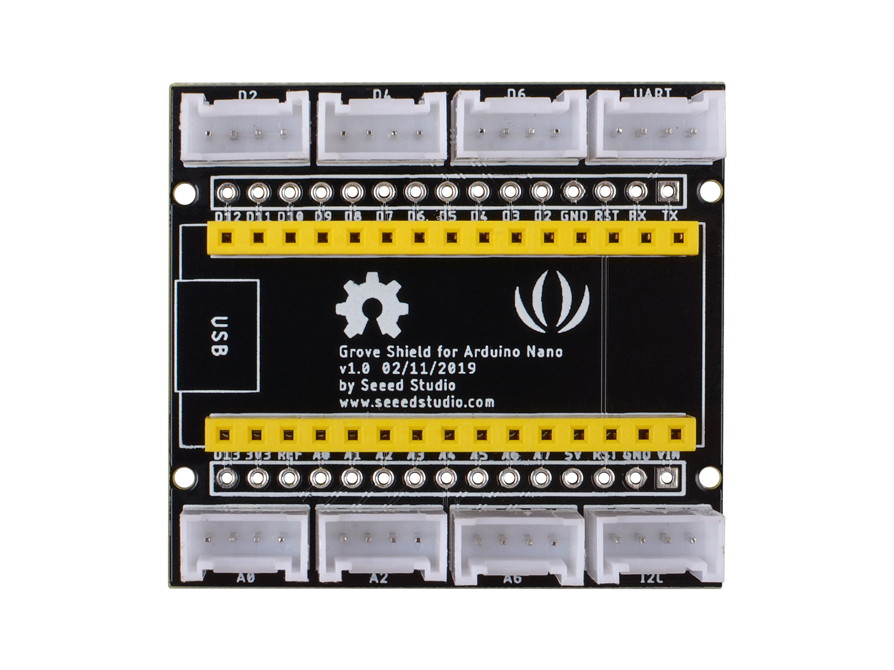
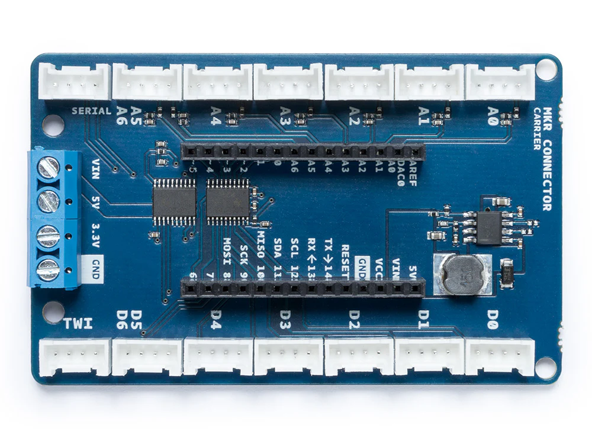

Grove - Circular LED
このLEDは制御用IC付きの24セグメントの環状LEDであり，発売元から
技術情報が取得できる．
ここで入力するのは，以下の5項目である．
- このLEDを使うか否か
- 使用するLEDの数
- 点灯/消灯する際の方向(右回り/左回り)
- クロック端子を接続するArduinoのピン番号("D12"のような形式)
- データ端子を接続するArduinoのピン番号("D13"のような形式)
ピン番号指定時の注意事項
このデバイスをGrove専用ケーブル(図1)を用いて，Grove用シールド(図2～4)に接続する場合，
クロック端子のピン番号は「データ端子のピン番号+1」にする必要がある．
ただし，MKRシリーズ用のシールドで，1つのコネクタに2つのピンが配線されているのは，D5,D6のみ(図4の左下コネクタ)なので，注意が必要．

図1 : Grove専用ケーブル
 図2 : Grove Base Shield (Uno, Giga等用)
図2 : Grove Base Shield (Uno, Giga等用)

図3 : Grove Nano Shield (Nanoシリーズ用)

図4 : Arduino MKR Connector Carrier (MKRシリーズ用)